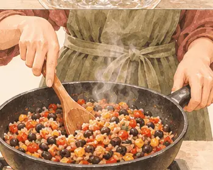
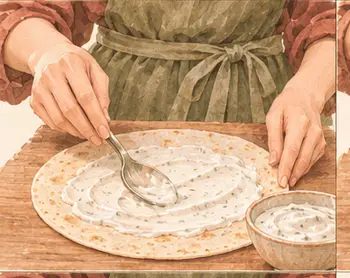
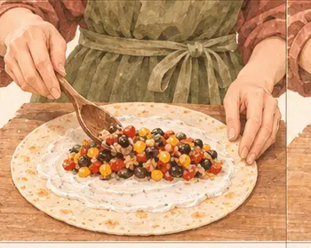
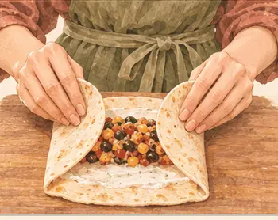
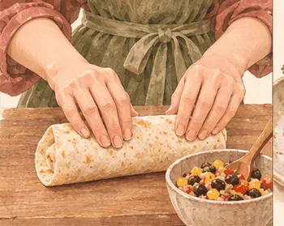

بروتين٢١ غ
كربوهيدرات٩٣ غ
دهون٧ غ
ألياف١٤.٣ غ
كالسيوم١٨٩ ملغ
حديد٥.٩ ملغ
بوتاسيوم٧٦٥ ملغ
فيتامين ج٦٥ ملغ
القيم الغذائية تقديرية للحصة الواحدة.

مكوّناتك
الوزن بالجرام. حدّد ما جهّزته.
| المكوّن | حصة | ٣ حصص | ٤ حصص |
|---|---|---|---|
| ١٢٠ | ٣٦٠ | ٤٨٠ | |
| ٨٠ | ٢٤٠ | ٣٢٠ | |
| ٦٠ | ١٨٠ | ٢٤٠ | |
| ٥٠ | ١٥٠ | ٢٠٠ | |
| ٥٠ | ١٥٠ | ٢٠٠ | |
| ٢٥ | ٧٥ | ١٠٠ |
الأدوات: مقلاة، لوح تقطيع، شوكة

يلا، نطبخها معًا.
خذ وقتك، واتبع الصور على راحتك.
الخطوة ٠١
قطّع الفلفل مكعبات.
الخطوة ٠٢
غطِّ الفلفل مع ملعقة ماء على نار متوسطة ٣–٤ دقائق.
الخطوة ٠٣
صفِّ الفاصوليا والذرة.
الخطوة ٠٤
أضفهما إلى الفلفل مع الأرز.
الخطوة ٠٥
اهرس بعض الفاصوليا لتتماسك الحشوة.

الخطوة ٠٦
قلّب حتى تسخن بالكامل.

الخطوة ٠٧
ادهن الرغيف بزبادي الثوم.

الخطوة ٠٨
ضع الحشوة في الوسط واترك الأطراف فارغة.

الخطوة ٠٩
اطوِ الجانبين.

الخطوة ١٠
لفّ الرغيف وقدّم بقية الحشوة بجانبه.